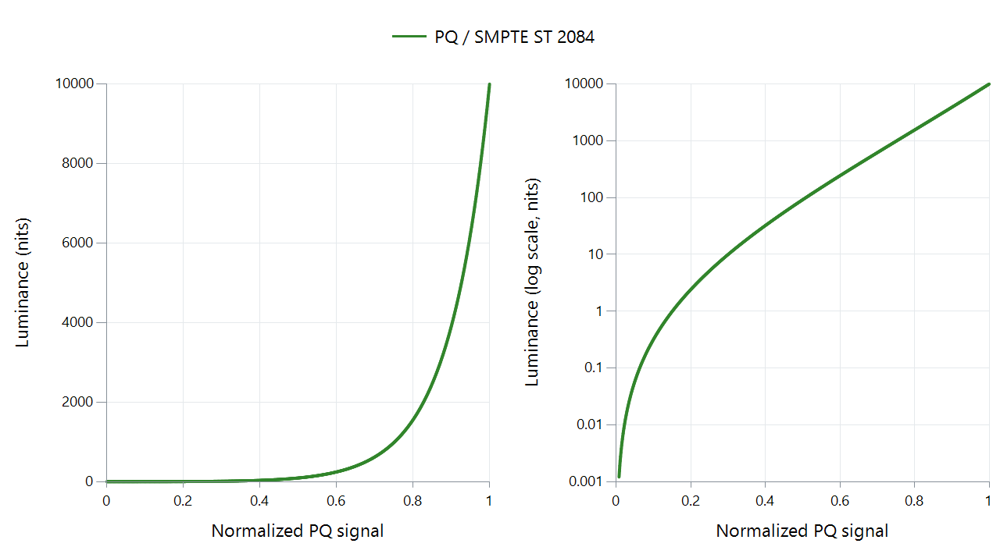

Perceptual Quantizer (PQ): SMPTE ST 2084
Perceptual Quantizer (PQ) is the HDR transfer function standardized in SMPTE ST 2084. It gives encoded values an absolute display-light meaning, with a reference range extending to 10,000 nits. Its nonlinear shape distributes signal precision with human visual sensitivity in mind.
That upper limit describes what the encoding can represent. It does not mean a film uses 10,000-nit highlights or that an HDR television must reach that brightness.

ST 2084 reference EOTF for neutral gray. The left axis shows actual luminance; the right uses a logarithmic scale to reveal shadows. Zero luminance cannot appear on the logarithmic axis.
| Light level | Normalized PQ signal, rounded |
|---|---|
| 1 nit | 0.150 |
| 100 nits | 0.508 |
| 1,000 nits | 0.752 |
| 10,000 nits | 1.000 |
The table is calculated from the inverse of the standard's EOTF. These normalized values are not raw 10-bit code values; numerical range must also be accounted for when storing them.
Why PQ needs appropriate playback
Imagine a highlight encoded for 1,000 nits and an output that can reproduce only 400. Correctly understanding PQ identifies the requested light level, but cannot make the display produce it. A subsequent tone-mapping decision determines how to fit that highlight alongside the rest of the image.
Treating PQ values as an ordinary SDR gamma signal changes their meaning. Relabeling the stream or turning up saturation cannot perform the required conversion.
For Emby playback, distinguish the source signal from the output signal. The server may convert HDR during transcoding, or a capable playback renderer may adapt it locally. The Emby Windows documentation describes rendering-stage tone mapping. PQ specifies the signal's light-level interpretation; it does not prescribe a single tone-mapping curve for every output screen.